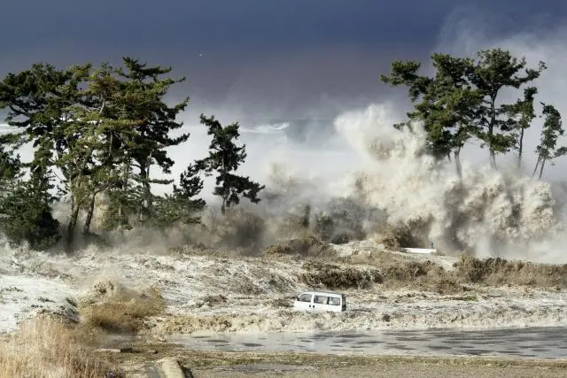

Tsunami (Japanese: 津波) — very long ocean gravity waves, which are mainly formed as a result of an earthquake (with a magnitude of more than 6.5 on the Richter scale and a hypocenter at a depth of less than 50 km), volcanic activity and other tectonic processes occurring on the bottom or in the coastal zone. Of the 1000 known cases of tsunami, more than 100 were catastrophic. 80% of tsunamis occur in the periphery of the Pacific Ocean
